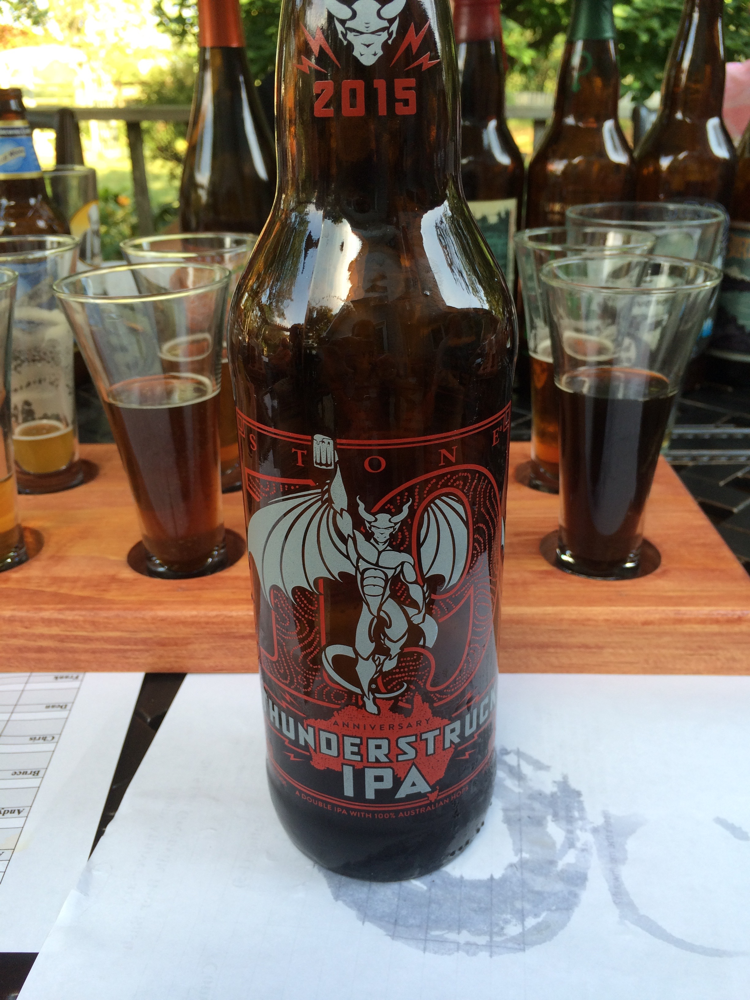
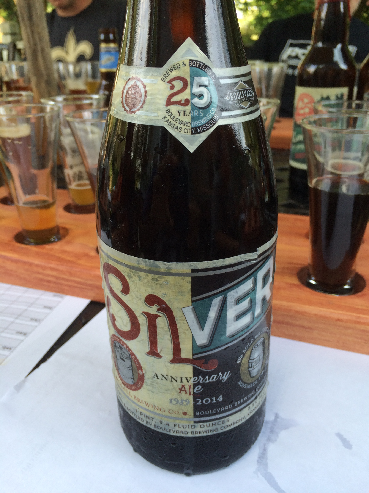
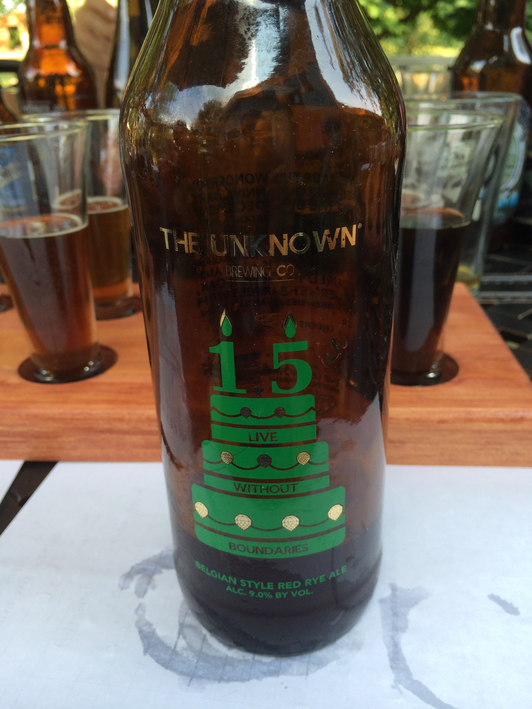
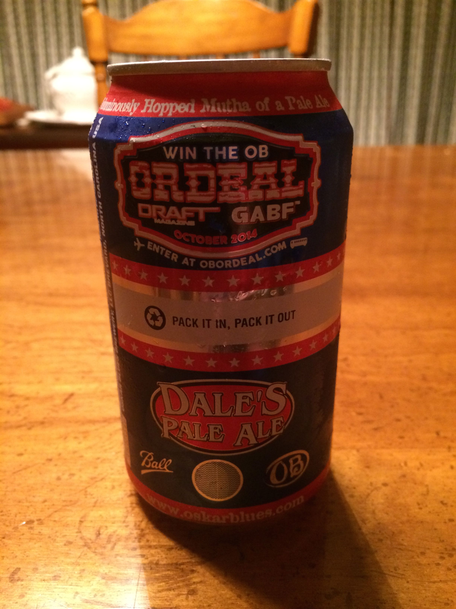
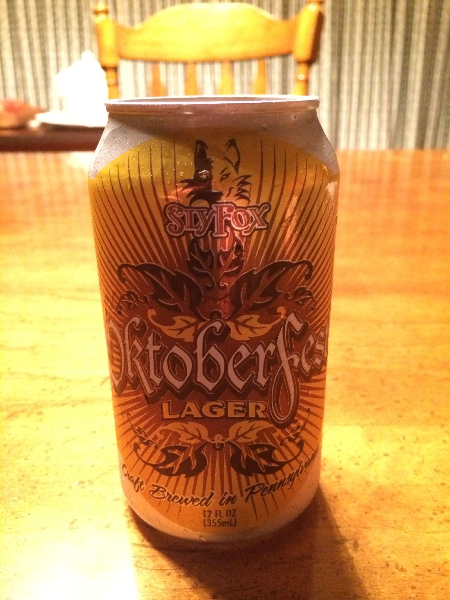

2015 - (Un)Happy Anniversary
Date: Saturday, August 29, 2015Participants (9): Aly, Andy, Bruce, Dean, Chris (Rachel), Frank, JeffK, JeffS, Justin
| Total (Rank) | Aly | Andy | Bruce | Chris (Rachel) | Dean | Frank | JeffK | JeffS | Justin | |
|
Blue Moon - Belgian White (Nobody) |
24.0 - #3 | 1 | 4 | 2 | 3 | 3 | 5 | 5 | 0 | 1 |
|

Stone Brewing Co - Thunderstruck IPA (JeffK) |
34.5 - #1 | 5 | 5 | 4.5 | 4 | 4 | 0 | 4 | 4 | 4 |

Ithaca - Excelsior! 15th Anniversary Dark Rye (Frank) |
17.5 - #5 | 2 | 1 | 3 | 3 | 3 | 1 | 2 | 2.5 | 0 |
|

Boulevard - Silver Anniversary Ale (Bruce) |
20.0 - #4 | 1 | 1 | 4 | 2 | 4 | 3 | 3 | 2 | 0 |

Long Trail - 25th Anniversary Ale (Jeff) |
17.0 - #6 | 1 | 0 | 3 | 5 | 0 | 2 | 2 | 1 | 3 |
|

The Unknown Brewing Company - 1.5ish Anniversary (Dean) |
5.0 - #10
|
0 | 1 | 1 | 3 | 0 | -1 |
1 | 0 | 0 |
|
Port Brewing - Anniversary Ale Imperial IPA (Justin) |
25.0 - #2 | 2 | 1 | 4.5 | 4 | 0 | 0 | 5 | 3.5 | 5 |
|
Uinta Brewing Company - 22nd Crooked Line Birthday Suit: Sour Plum Abbey Ale (Aly) |
11.0 - #9 | 3 | 4 | 1 | 0 | 0 | -1 |
4 | 0 | 0 |

Weyerbacher Brewing Co. - 20th Anniversary Ale (Andy) |
16.0 - #7 | 3 | 1 | 3 | 3 | 0 | 1 | 1 | 2 | 2 |

Fegley's Brew Works - 17th Anniversary (Chris) |
15.0 - #8 | 2 | 0 | 3 | 3 | 0 | 2 | 3 | 2 | 0 |
2014 - Year of the Can 
Date: Sunday, August 31, 2014
Participants (9): Aly, Andy, Bruce, Chris, Dean, Frank, JeffK, JeffS, Justin
| Total (Rank) | Aly | Andy | Bruce | Chris | Dean | Frank | JeffK | JeffS | Justin | |
|
North Country Brewing - Buck Snort Stoudt (Justin) |
36.5 - #1 | 4 | 5 | 4.5 | 3 | 3 | 4 | 4 | 4 | 5 |

Sierra Nevada - Torpedo (Bruce) |
36.0 - #2 | 5 | 5 | 4.5 | 4.5 | 2 | 3 | 3 | 4 | 5 |
|

Oskar Blues - Dale's Pale Ale (Aly) |
35.5 - #3 | 5 | 4 | 2 | 4.5 | 3 | 3 | 4 | 4 | 5 |
|
Sly Fox - 113 IPA (Andy) |
28.5 - #4 | 3 | 2 | 3 | 4 | 2 | 2 | 5 | 3.5 | 4 |

Stillwater Artisanal - Classique (Dean) |
27.0 - #5 | 2 | 3 | 3 | 4 | 4 | 5 | 1 | 3 | 2 |
|
Sly Fox - Grisette (Chris) |
25.5 - #6T | 4 | 2 | 4.5 | 3 | 3 | 3 | 2 | 2 | 2 |
|
Schlafly - American Brown Ale (Frank) |
25.5 - #6T | 1 | 4 | 3 | 3 | 4 | 3 | 1 | 3.5 | 3 |
|
DC Brau - The Citizen (JeffS) |
24.0 - #8 | 2.5 | 4 | 2 | 3 | 4 | 1 | 3 | 2.5 | 2 |
|

Sly Fox - Octoberfest (JeffK) |
18.5 - #9 | 2 | 2 | 2 | 2 | 2 | 2 | 2 | 2.5 | 2 |
2013 - Year of the IPA (East Coast) 
Date: Saturday, August 24, 2013
Participants (8): Aly, Andy, Bruce, Chris, Dean, Frank, Jeff, Justin
| Total (Rank) | Aly | Andy | Bruce | Chris | Dean | Frank | Jeff | Justin | |
|
Flying Fish - Exit 16 (Andy) |
31.5 - #1 | 5 | 5 | 5 | 3 | 5 | 1 | 3.5 | 3 |

Three Heads Brewing - The Kind (Chris) |
24.5 - #2 | 4.5 | 4 | 2 | 3 | 4 | 3 | 3 | 1 |

Oskar Blues- Deviant Dale's IPA (Aly) |
23.5 - #3 | 3.5 | 4 | 3 | 3.5 | 5 | 1 | 2.5 | 1 |
|
Terrapin - Hopsecutioner (Jeff) |
21.5 - #4 | 4 | 3 | 2 | 3 | 4 | 2 | 1.5 | 2 |
|
Shipyard - Monkey Fist IPA (Bruce) |
21.0 - #5 | 1.5 | 4.5 | 1 | 3 | 3 | 2 | 3 | 3 |
|
Fegley's BrewWorks - Hop'solutely (Justin) |
19.5 - #6 | 2 | 1 | 4 | 5 | 1 | 1 | 2.5 | 3 |

Barrel Trolley - IPA (Frank) |
19 - #T7 | 2 | 3 | 2 | 4 | 3 | 1 | 3 | 1 |

Green Man - IPA (Dean) |
19 - #T7 | 3 | 1 | 1 | 3 | 3 | 3 | 3 | 2 |
2012 - Year of the Porter 
Date: Sunday, September 2, 2012
Participants: Aly, Andy, Bruce, Chris, Dean, Frank, Jeff
Candidates (1): Justin (Porter Presentation)
Resources: Beer Infographic, Porter Beer - Wikipedia
2011 - Year of the Hefe "Wheat" Beer
Date: Sunday, September 4, 2011Participants (7): Aly, Andy, Bruce, Chris, Dean, Frank, Jeff
2010 - Year of the Belgian-Style beer
Date: Saturday, September 4, 2010Participants (7): Aly, Andy, Bruce, Chris, Dean, Frank, Jeff
Beer in Belgium - Wikipedia
Quick and Dirty Guide to Belgian Beer
2009 - Year of the Comfort Beer
Date: Saturday, September 5, 2009Participants (7): Aly, Andy, Bruce, Chris, Dean, Frank, Jeff
2008 - Micro Brew Bonanza / Year of the Local Beer
2007 - World of Flavors
2006 - Impromptu Beer Tasting
Note: Same day of Hamburg Hamburger Festival